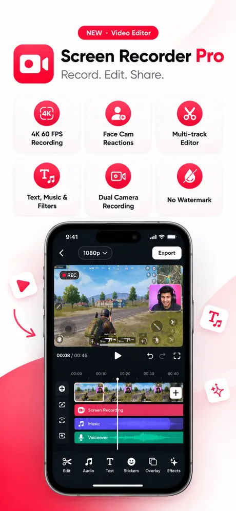
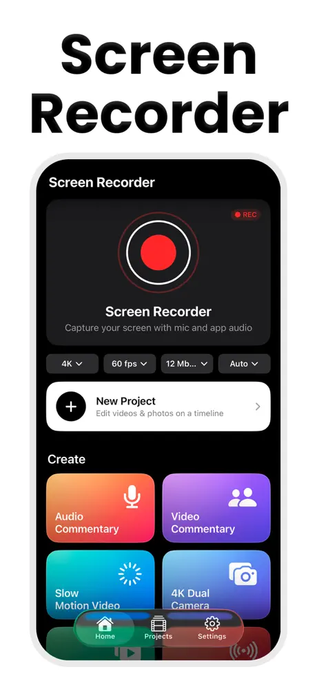
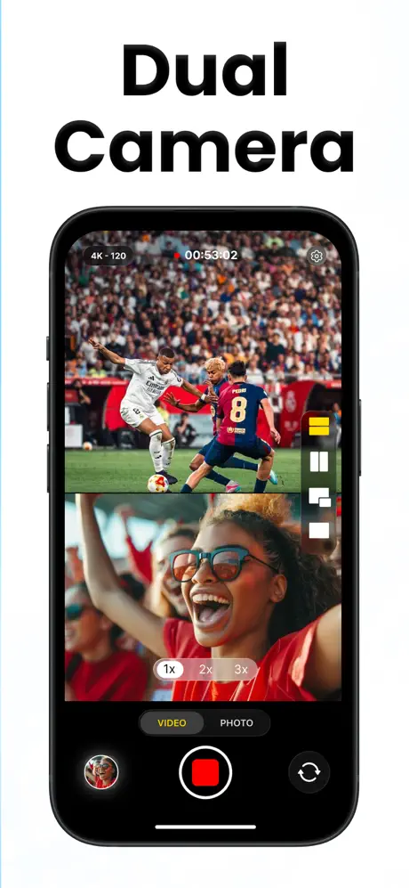
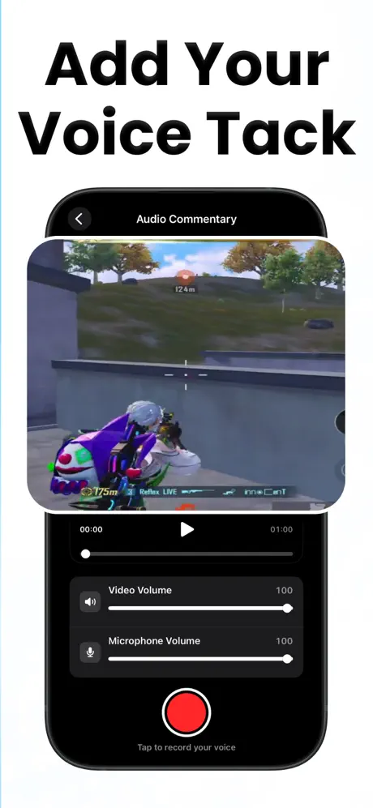
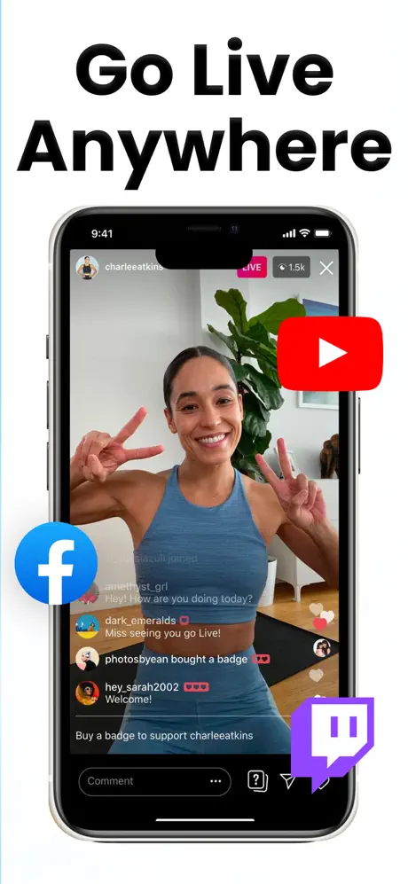

Camera & Video
How to Record a Reaction Video on iPhone
Three ways to record reaction videos on iPhone, from built-in screen recording with your mic to face-cam overlays, plus audio and copyright tips.
Reviewed
Record your screen, then edit it in one app.
Screen recording in up to 4K at 60 fps with no watermark or time limit, plus a multi-track video editor and creator tools such as face-cam commentary.





Screenshots from the official App Store listing.
Screen Recorder captures gameplay, video calls, tutorials and app demos with internal audio, your microphone, or both. You choose the resolution, frame rate and bitrate.
A multi-track editor lets you put video, overlays, text, stickers and music on their own lanes, then split, trim, change speed, add transitions and crop to any aspect ratio.
Creator tools include Video Commentary with a face cam in a circle, square or rectangle, Audio Commentary voice-overs, Dual Camera recording and speed-curve slow motion.
Up to 4K at 60 fps with internal audio and/or mic. No watermark, no recording time limit.
Video, overlays, text, stickers and music on separate lanes.
Split, trim, duplicate, reorder, speed, filters, transitions, crop, rotate and aspect ratio.
React to any video with a face cam in a circle, square or rectangle.
Record a voice-over and mix the levels.
Front and back cameras at once, split or picture-in-picture.
Draw a speed curve for smooth slow motion.
Features as described on the App Store listing. Some require an in-app purchase.
The listing says screen recording is free. Premium adds unlimited exports and sharing, 4K/1080p quality, 60 fps and every creator tool.
Streaming and other apps that protect their content with DRM usually appear black in any screen recording. This is an iOS restriction, not a setting you can change.
Camera & Video
Three ways to record reaction videos on iPhone, from built-in screen recording with your mic to face-cam overlays, plus audio and copyright tips.
Reviewed
Camera & Video
Record with both iPhone cameras at once for reactions and vlogs, check which iPhones support it, and get vertical and horizontal versions from one take.
Reviewed
Camera & Video
One take, two videos: vertical and horizontal.
Audio & Music
A full audio studio for iPhone, iPad and Mac.